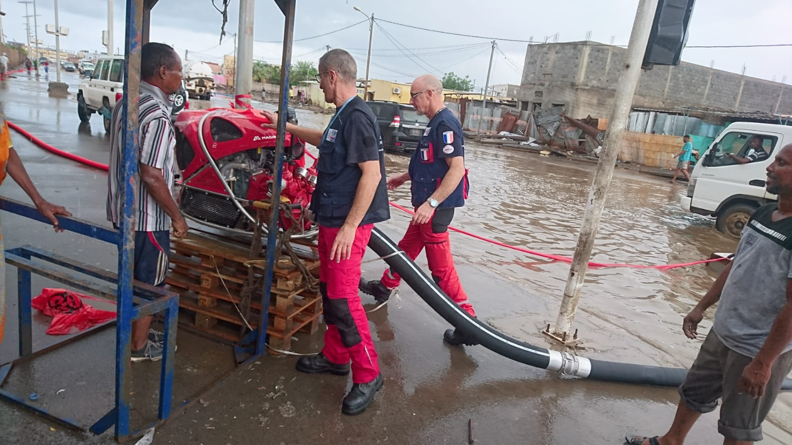
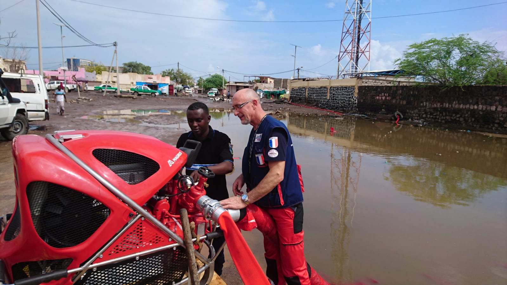
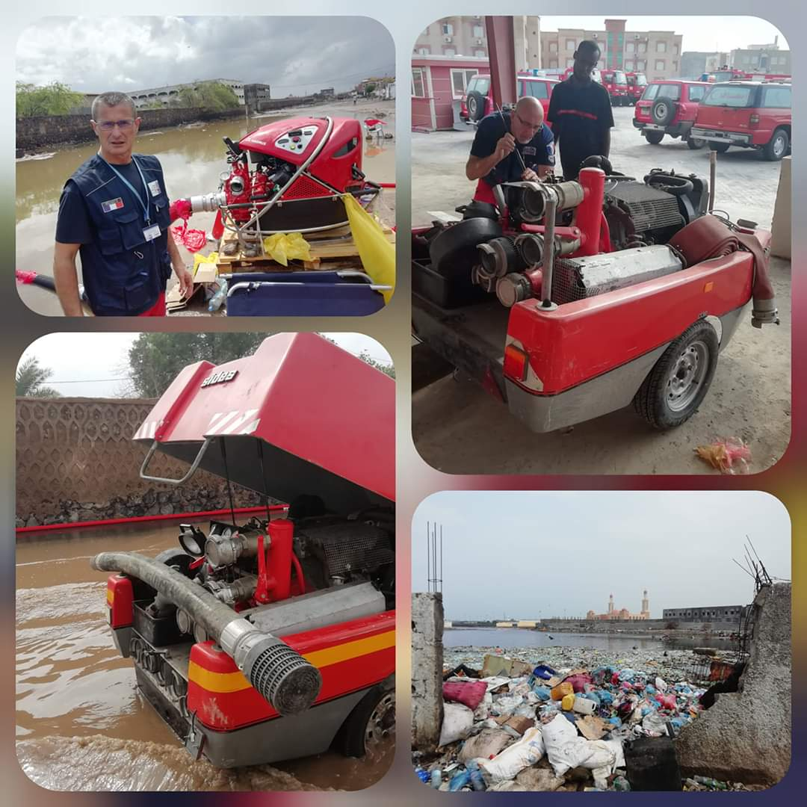
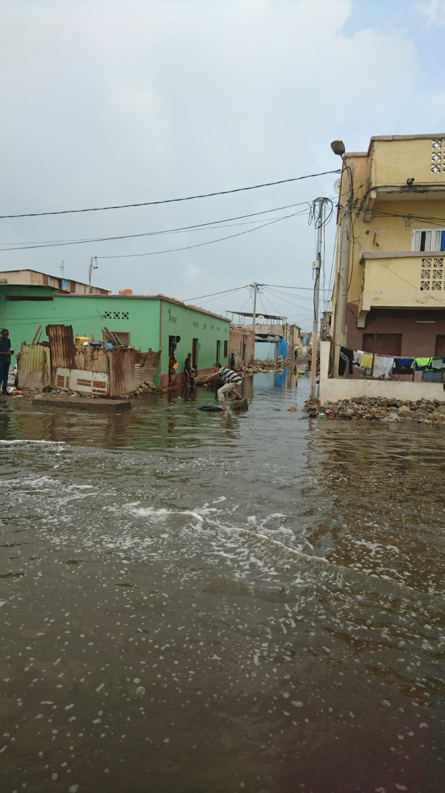

Following intense rains that caused major floods in the city of Djibouti, and at the request of the Director General of the Djibouti police, POMPIERS DE L’URGENCE INTERNATIONALE (PUI FRA-1) has deployed a technical and operational support team of the DG police to help to :
-the coordination of operations with the Director General of the Djibouti National Police, the National Office for Water and Sanitation, and the Head of Sanitation (EGAL), and fire service,
-the creation of a map of the different networks and sensitive points, and flood area,
-the installation in DJIBOUTI Town of several pumping means from 60 to 300 m3/hour,
-the maintenance operations on several pumping means in order to have a maximum capacity,
-to resolve the problem of the silting up of the network and unhealthy waters,
The situation is in progress and better with the system of pumping, but new rains are attended in few days and the situation could be less positive.
A coordination meeting was also held with IOM DJIBOUTI; a training project in crisis management and inter-service exercise after the crisis is requested by the police DG.
 
 